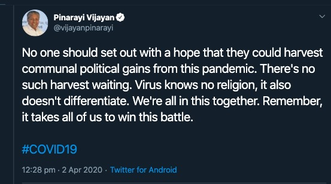

By the time India is in “Lock-down” phase. I {Arun Koundinya} have been hearing and reading a lot about the “South Korean” Model and their use of Advance Analytics in quick identification of Corona positive cases at an early stage level.
However, I’m also a believer that “For Indian Problems we might need Indian/Indigenous Solutions to start with; rather a copy cat solutions as the larger Mass user base are still Indians.”
So, I took the numbers as on 4th April 2020 Morning 9 AM and picked the states that has more than 200 Confirmed Cases. Then derived a metric ( Deaths upon Confirmed - Ideally it has to be ( Deaths + Critical ICU Cases ) / Confirmed )
| State/UnionTerritory | Confirmed | Cured | Deaths | Deaths/Confirmed |
| Tamil Nadu | 411 | 6 | 1 | 0.00 |
| Kerala | 295 | 41 | 2 | 0.01 |
| Delhi | 386 | 8 | 6 | 0.02 |
| Maharashtra | 423 | 42 | 19 | 0.04 |
I followed some papers and articles on this particular metrics; As this will help us which states or countries are having best practices. Such that the same practices if possible can be implemented to other countries.
Mentioned 4 states contribute to 50% of the Corona Confirmed Cases in India. It is good that may be the testing is extensive in these regions.
Tamil-Nadu and Kerala StandOut among the others by having less number of deaths. Tamil Nadu reported its first case on 7th March 2020, may be it is too early to decide. While Kerala reported its first case on 30th Jan 2020 and still there are only two deaths.
So, I strongly felt that Kerala is doing some-what good and we should learn from them. So, I reached out to Dr. Mahesh and inquired about the control measures in Kerala and reason having less number of deaths in that place.
He explained about their Experience of NIPAH VIRUS during May and June 2018. Which is even more deadliest contagious disease than Corona having a fatality rate of 80%. However, Kerala has been successful in controlling the entire situation as a OUTBREAK without spreading it into an Epidemic one. { To Note: Nipah Virus has no Vaccination & No Treatment }
I requested him to write a blog on the Kerala Effectiveness and their current methodologies and learnings which might be useful may be for us in the long term.
Malayalam Movie “VIRUS” has been released in year 2019 based on true events happen during the outbreak in Kerala. It is on Amazon Prime you may watch at as well. {Link}. It has English Subtitles as well.
In India, Outbreak of Nipah Virus has took place in year 2001 in West Bengal. However, there might be lessons learnt at that time. However, enough documentation or contacts are not available.
Here goes the Official Title of the Blog.
How Kerala became proactive with experience of handling NIPAH VIRUS and how it resulted in strategic response and mitigation during the current Corona Pandemic
A Quick Video by Experts
If NIPAH had started in a country of large dense populations with cramped hospitals the outbreak would be far worse and probably resulting in more number of fatalities. We all are well aware what has happened on 2nd of May 2018 the first reported case happening in Kozhikode or Calicut district of Kerala . When the first case was reported the medical staff Was puzzled as to how the patient as to how to respond to the rapidly deteriorating state of the patient. The first reported case was of a 28 year old architect from Kerala’s Perambara town, he came in to the casualty of BABY MEMORIAL HOSPITAL, CALICUT with encephalitis(inflammation of brain tissue) like symptoms and a heart rate 180 beats per minute and his blood pressure had shot up. His limbs had no reflexes when examined by the neurologist.
Dr. Jayakrishnan who was examining him had started to rule out each disease that he might had in mind . But apparently he was thinking on the lines of Japanese encephalitis a mosquito borne infection which doesn’t affect more than one person of the same household but surprisingly the patients younger brother, had died about 12 days ago after showing similar symptoms. His father and aunt, too, had contracted the infection.
The neurologist was then suspicious about a rabies but it was ruled out too due to the absence of a common pet. Next the doctor was thinking in the lines of toxic poisoning but poisoning never has a fever. By then the team of neurologists had become alert that this could be an unseen virus which was not seen in Kerala before. The neurologist decided that he would consult with a virologist for further help. Govindakarnavar Arunkumar at Karnataka’s Manipal Centre for Virus Research (MCVR), about 300 km from Kozhikode. Patients samples were dispatched to MCVR and it was found out to be the deadly Nipah virus. { Note:MCVR team was trained by the United States’ Centers for Disease Control and Prevention to test for the Nipah virus }.
This made the Manipal laboratory only the second facility in India capable of doing so, apart from Pune’s National Institute of Virology (NIV). These are the labs which are currently functional in detecting and confirming positive cases of coronavirus . The good move of getting trained By CDC is helping us to further increase the number of labs and train various technicians in handling and sampling the testing.

So when did the Nipah virus actually begin to manifest and which country had it first?
The virus gets its name from a village in Malaysia-Sungai Nipah. This was the village where Nipah virus was first identified in 1998-1999.
There, the virus is believed to have jumped from fruit bats of the Pteropus species to domestic pigs tied under the trees where such bats breed. From the pigs, the virus travelled to pig breeders, infecting and killing about 105 of them in an outbreak.
Nipah next appeared in Bangladesh, triggering nearly 15 outbreaks in the 2000s. It mainly infected people who had a taste for raw palm sap, which is frequently contaminated by bat urine and saliva.
Once the virus spread to humans, it was transmitted from one person to another through respiratory droplets. Luckily, Nipah does not spread efficiently and moves only to people within a metre of very sick patients.
How does Nipah spread and how did it spread in Kerala?
Bat secretions laden with virus can infect people during fruit tree climbing, eating/handling contaminated fallen fruits or consuming raw date palm sap/juice or toddy,” says the National Centre for Disease Control in its guidelines on Nipah virus.
The guidelines outline that besides animal-to-human transmission, Nipah virus can also transmit between humans. The human-to-human transmission occurs when a healthy person has close contact with an infected person at home or during treatment at hospital Another possible source of infection can be bodies of people who died due to Nipah virus.
The National Centre for Disease Control (NCDC) advises that handling of such dead bodies should be done strictly in accordance with government advisory.
In Kerala the Index Patient has passed the virus to 16 persons at Medical College Hospital; later two more were infected, increasing the total count of infected to 18. There were 10 deaths in the first week, including a nurse named Lini Puthussery who treated the index patient before diagnosis. The outbreak began in Kozhikode district and later spread to the adjoining Malappuram district.
Here is the first wave of patients from the index patient.
Who had put their efforts in declaring Kerala NIPAH free? & Brisk State Response.
Through the Contact tracing immediately within a week approximately 1500 people were is observation and every couple of days there were monitored on various health parameters along with strict lockdown in the hot spot districts.
The entire process was followed to the letter as per WHO Protocol. {Be it be Fumigation, Usage of Disposable suits and Masks, Protective Gears for all Health Care Workers & Support Staff and Cremation of the bodies}.
Officially by June End 2018 Kerala was declared Nipah Free.
In a country where women rarely occupy high-profile public offices as much as the sea of men in white shirts, this former high school chemistry teacher and a first-time state health minister has won many hearts for being extremely approachable and caring. She is no stranger to handling a health crisis, having successfully led the fight against the Nipah virus outbreak in 2018 and 2019. And she is none other than Shailaja Teacher.
There has been a demand for an efficient virology lab in Kerala since the Nipah virus outbreak in the state. Following this, the Virology Lab at Alappuzha was strengthened. The Institute of Advanced Virology Lab at Thiruvananthapuram is also functioning now. Tests against the new type of novel coronavirus could be run only with the permission of the Centre. The Institute of Advanced Virology Lab at Thiruvananthapuram is fully equipped and able to detect and prevent such infections very quickly.
Corona Pandemic Effectiveness in Kerala Improvised Methodology
With expats from Kerala across the globe, her nearly 20-member team constantly follows the global coverage of corona. Whenever Shailaja gets time, she also looks upon the Internet and keeps herself updated, a trait she claims to have helped her save the customary briefing of the team of doctors under the team about corona.
Some of the measures taken during the recent corona pandemic are the complete transparency between the government and public. She asked the media houses not to publish any data except from official sources which she would update through a press conference held everyday evening. This was done to prevent to widespread panic and to keep the public informed . She welcomes all of her staff with a empathic smile which brings in strength and solace which are effective in leading the staff.
When a question from the press was asked as to how does she pull it off? “I don’t do anything special. I have a degree in chemistry so I have some knowledge about molecules and medicines. Otherwise, it is always a team effort,” said Shailaja.
Some Measures undertaken in Kerala on a war-footing were as follows:
24x7 call-centre at state coronavirus outbreak Control & Prevention Cell. Similar 24x7 call-centres across all 14 districts. Teams constitutes of trained Junior Health Inspectors, doctors & other.
Kerala State Control Room - The War Room - for all crucial information gathering/dissemination, multi-level co-ordination of all within the Health department. This is replicated in all 14 districts to streamline information flow and decision making.
Monitoring of airports in Kerala had been strengthened. Those who have returned from China are advised to contact the respective District Medical Officer. It was decided to take special care of them if they displayed any symptoms. It was also directed to health department officials to take stringent measures to prevent the spread of the disease.
The Department of Health has released a set of guidelines and therapeutic standards approved by the World Health Organisation for strengthening the novel coronavirus resistance.
Manufacturing of Face Masks by Prisoners.
Ensurity of supply and availability of Protective Gears for all Medical Staff and their support Staff.
Following Brisk actions were taken by them in the month of March
Announced a Rs 20,000 crore financial package to tide over the present crisis in the wake of the virus outbreak.The multi-crore special package includes Rs 500 crore health package, Rs 2,000 crore loans and free ration.
Social security pension of Rs 1,320 crore, given in April, would be distributed this month, he said, adding that 50 lakh people will benefit through the pension scheme.
Those belonging to the below poverty line (BPL) and Anthyodaya, who don’t receive social security pension, would be given Rs 1,000 each, for which Rs 100 crore would be earmarked. Cutting across APL and BPL families, 10 kg of free ration would be distributed and Rs 100 crore would be set aside for the purpose, he said. even during the initial days of the outbreak, when people were encouraged to remain indoors, Kerala was the first state to announce free ration for the poor. Delhi and Telangana soon followed the suit.
A string of 1,000 low-cost hotels, providing food at Rs 20, would be opened across the state next month, the chief minister added.
Local bodies have been asked to identify cooks and enumerate ward-level volunteers for home delivery of cooked food. Considering the plight of patients stuck in hospitals across the state, the CM said government hospital canteens will provide them and their families food
The Kerala government has announced that all migrant workers who have been officially called “guest workers” would be provided with accommodation and food. The government has also set up special helpline numbers to enable poorer households in want of food to contact the government
The volunteer teams called “Aarogya Sena” consisting of local youth were formed after Chief Minister Pinarayi Vijayan announced the decision. Separate WhatsApp groups were formed for each ward, adding the volunteer squad members, local politicians and village officials. Under the watch of the ward members, the team identified all financially struggling families. The contact details of the Sena members were shared with all residents of the locality so that they can contact them and order lunch for the next day.
The state also announced temporary housing and food facilities for transgenders in the state who often don’t have enough savings or social security benefits such as ration.
To Conclude,
There might be many best practices across the states. However, we picked Kerala because of the clarity of information they are disseminating on day to day basis. { Link }
Kerala CM is one of the first CMs who mentioned this tweet; which i liked it personally.

It is a huge achievement for the state especially when COVID19 patients above the age of 60 are considered in the high risk category across globe. Here is the tweet from Shailaja Teacher.

Adding on this, Kerala has been learning to become self sufficient from back to back blows of Nipah Virus and Kerala Floods
Our Final Commentary:
India being a high density population has to become self sufficient in handling and detecting the new variety of zoonotic viruses going forward. Also, this field might open few jobs in India.
Supply and demand for job opportunities and future scope on Health Sector related fields has to be created on war footing post the country is free from Corona.
Each State has to be self sufficient: May be the central government can send teams from different cities across India for disaster management to Kerala and train on these strategies for future preparedness. Also, while forming the national budget a disaster response budget is to be allocated to each state in India and distribute to them to take swift action.
It is good to take private sector help in approving new hospitals and increase the number of hospitals across India with facilities and mock drills to tackle epidemics.
Other Informative Videos at User Disposal
Why to Bats Carry So Many Diseases?
The Story of Ebloa.